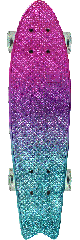

Bantom Chrome Pink and Blue Board
Globe Bantam ST 23 Chrome Pink / Blue Complete Cruiser Skateboard - 6" x 23"
Sidewalk surfing has never been better than with the Globe Bantam ST 23 Complete Cruiser Skateboard! This high quality Globe cruiser features a flat deck with a gradual kick tail making it the perfect choice for commuting across town or to and from class. The small, lightweight plastic mold also makes this board extremely easy to carry and very durable. This Globe crusier board comes factory pre-assembled so you can open the box and slay the streets ASAP!
Features:
Plastic mini cruiser with big, soft wheels
Deck Size: 6" x 23"
Wheelbase: 11.5"
Concave: Flat with gradual kick tail
Trucks: 3.5" Slant trucks
Wheels: Performance wheels for faster and smoother grip - LED's light up when spinning
Grip: S-Trac Grip